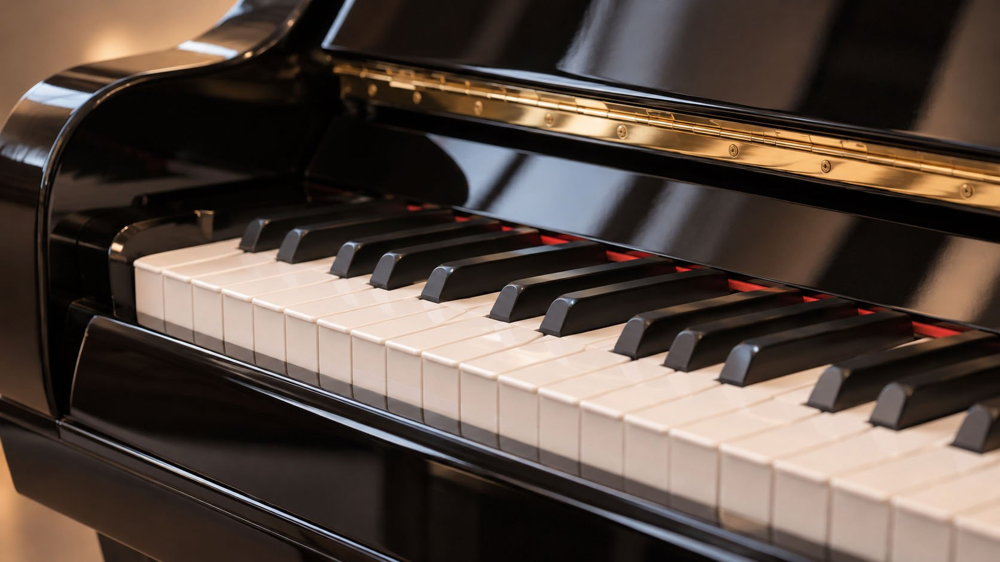
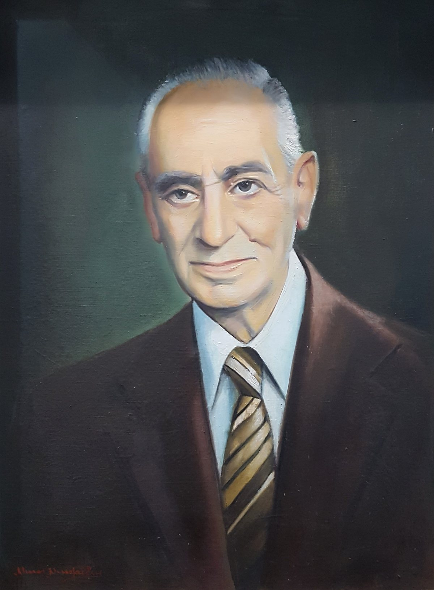
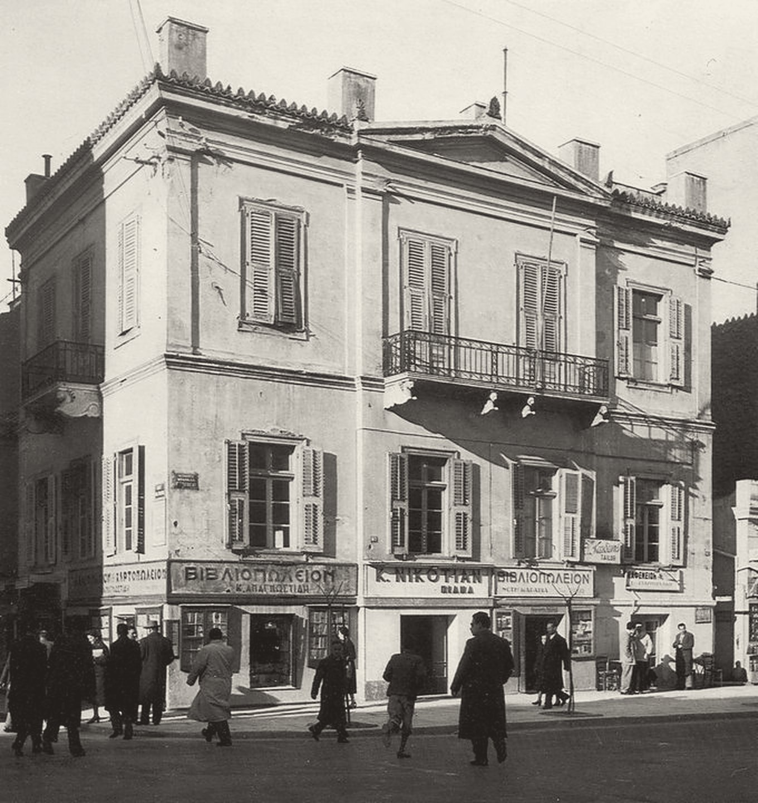
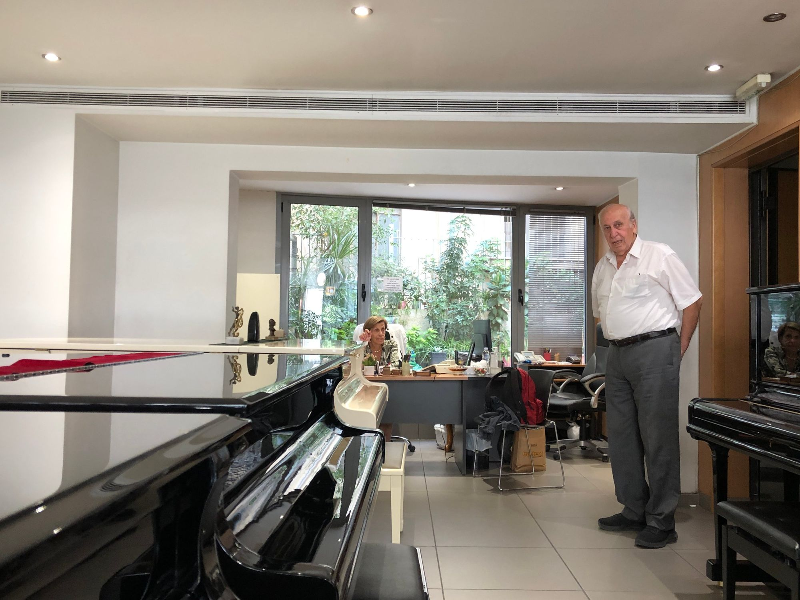
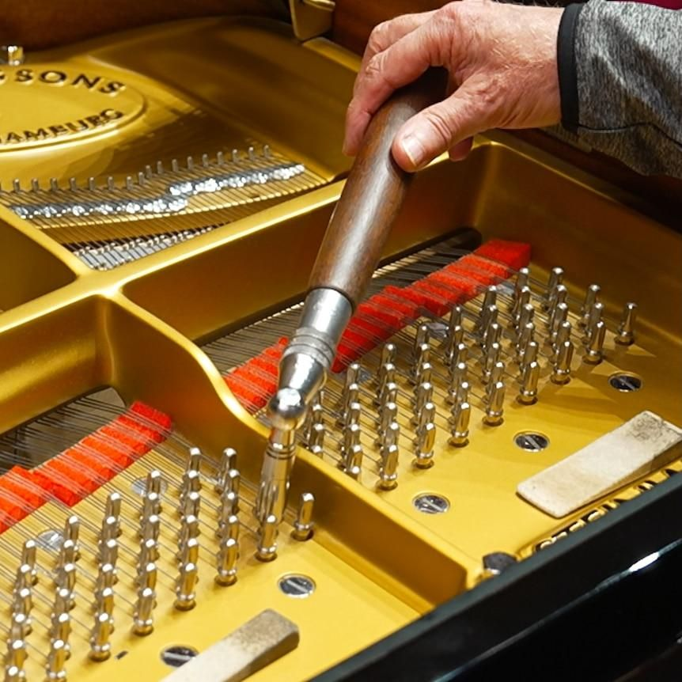
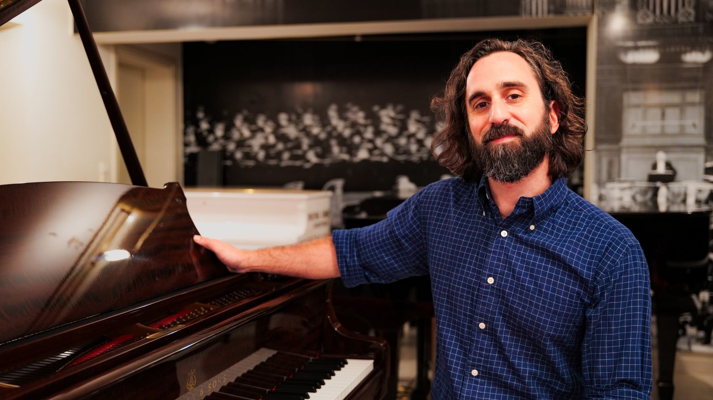

The House
A journey full of music.
Carlo Nikotian founded the music house in Athens in 1929. Almost a century later, the House is still a family business and the piano is still at its heart: we listen to it, we care for it and we introduce it to those who will play it.


The beginning
It all began with sound.
Carlo Nikotian was a piano technician and tuner. His work began with the ear: to listen to an instrument, understand what it needs and give it back its true voice.
In March 1929 he founded the music house at 63 Akadimias Street. His expertise in maintenance and tuning brought him close to the musicians of the time, and the House became associated with recitals by leading artists in Athens.
Two letters survive from those years, written in 1931 at the Hotel Grande Bretagne by Arthur Rubinstein and Artur Schnabel. Both praise Carlo’s work on a Bechstein piano.

63 Akadimias Street
The first shop, where it all began. On the ground floor of the neoclassical building, between two bookshops, the sign «K. Nikotian — Pianos».
-
Arthur Rubinstein
Athens, 9 February 1931 · in French“…and made it sonorous and brilliant once more.”
-
Artur Schnabel
Athens, 1931 · in German“…a gifted piano technician.”
Our journey
Almost a century of history.
From Akadimias Street to Solonos Street: five moments that shaped the House and its people.
-
The founding
Carlo Nikotian founds the music house at 63 Akadimias Street, Athens.
-
The partnership with Young Chang
Carlo and his son Stepan begin working with the South Korean piano maker.
-
A family continuity
After Carlo's death, the House is carried on by his children, Stepan and Arous.
-
–
The next generation
Karolos joins the House in 2000, after training in piano technology at Grotrian Steinweg. Robert follows in 2008.
-
Today
105 Solonos Street
The House continues its work in the centre of Athens.
The next generation
Knowledge passes from hand to hand.
Piano technology is not learned from books alone. It is learned beside someone who knows, on the instrument itself, over the years.
This is how knowledge passed through the House: from Carlo to his children, Stepan and Arous, and from them to the next generation. Karolos added training in piano technology at Grotrian Steinweg to the family's experience; Robert Karabetian joined the work of the House in 2008.

What began as one person's knowledge became the work of a family.



Today
The story continues on Solonos Street.
The House's showroom is at 105 Solonos Street, in the centre of Athens. There you will find new and pre-owned pianos, upright and grand, and people who can tell you about each one of them.
The best continuation of this story is written in person.